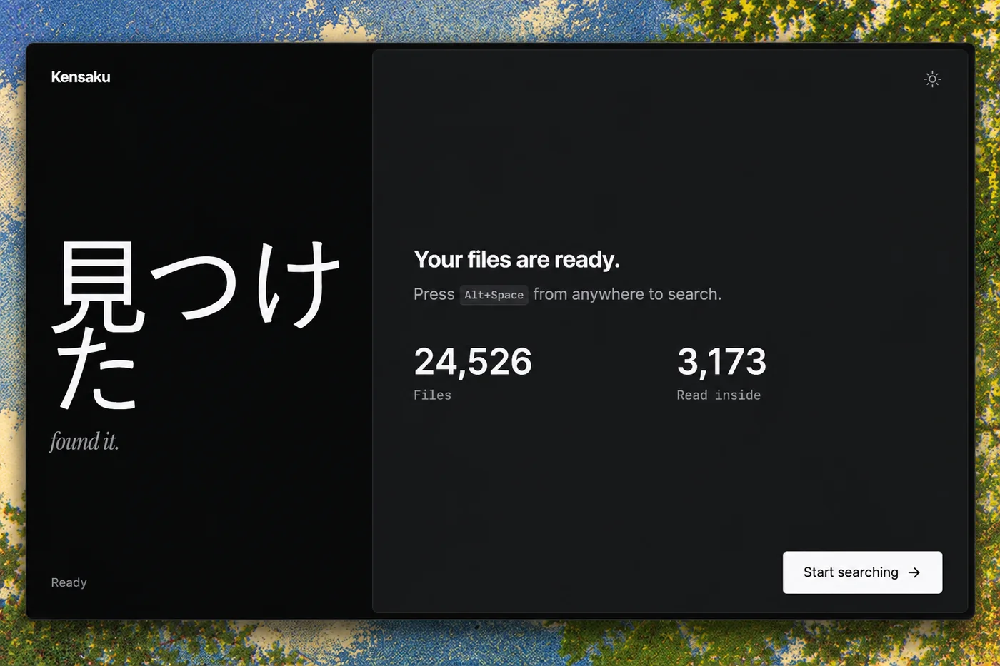

Windows
Your system- Signed installer. It installs for your account, no admin needed.
- If Windows shows a warning, choose More info, then Run anyway.
Free and open source
Kensaku finds words in your documents, code, and screenshots. It runs on your computer, and nothing leaves it.

Pick your system. Checksums are in SHA256SUMS.
chmod +x on the file, then open it.macOS and Linux
curl -fsSL https://github.com/yjid/kensaku/releases/latest/download/install.sh | shWindows PowerShell
powershell -ExecutionPolicy ByPass -c "irm https://github.com/yjid/kensaku/releases/latest/download/install.ps1 | iex"Choose the file for your system above.
Run the installer, then open Kensaku.
Choose what to index. Then type and search.